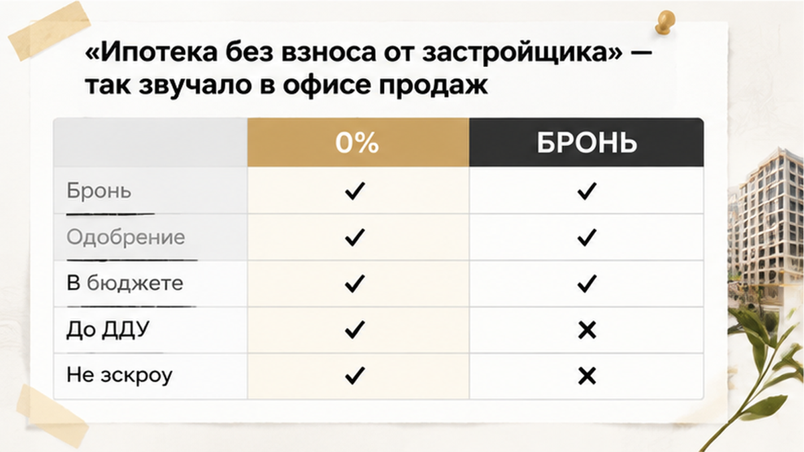
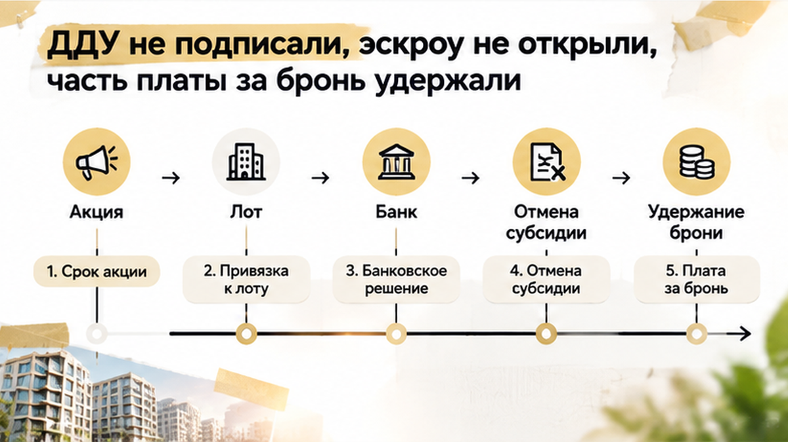
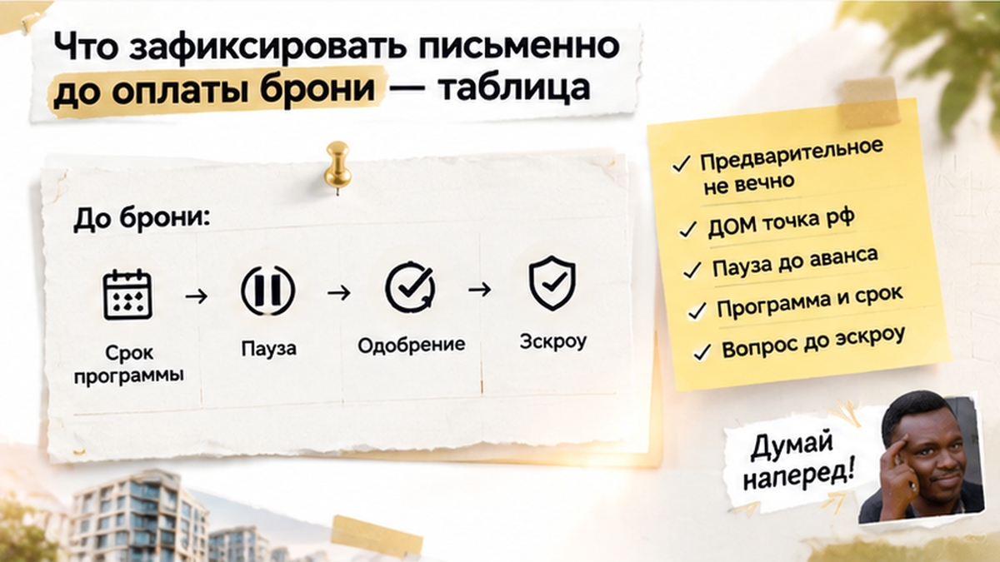

За 6 дней до ДДУ банк отменил программу с нулевым взносом — семья остановила сделку, платёж вырос примерно на 18 тысяч в месяц. Бронь уже оплатили, квартиру выбрали, будущие расходы разложили по домашнему бюджету. Собственных денег на большой первоначальный взнос не было — именно поэтому предложение застройщика и подошло. Несколько недель подготовки выглядели дорогой к покупке, но не закрепили условия, на которых семья собиралась покупать. Покажу, где заканчивается обещание в офисе продаж и начинается проверка документов, которую стоит провести до передачи денег.
Я Святослав Шакин, The Риэлтор, Тюмень. Разбираю покупки не по рекламному платежу, а по условиям, с которыми вы дойдёте до сделки. Смотреть разборы и задать вопрос можно в Telegram и MAX.

Вопрос у семьи был простой: получится ли купить квартиру, если первоначальный взнос ещё не накоплен? Не когда-нибудь после нескольких лет экономии, а на предложенных сейчас условиях.
В офисе продаж предложение описали как ипотеку без взноса от застройщика либо с минимальной суммой за счёт совместной акции с банком. Для покупателя разница в формулировках невелика. Главное услышано: крупные деньги на входе искать не придётся.
А я бы задержался на двух словах: «за счёт».
За чей именно счёт? Кто покрывает недостающую сумму? До какой даты действует договорённость и подходит ли под неё выбранная квартира?
Под рекламным «нулём» могут стоять компенсация застройщика, маткапитал вместе с акцией, траншевая схема или отдельное соглашение с банком. По одному названию механизм не восстановить. Субсидированная ставка тоже не отвечает на вопрос, откуда берутся деньги на взнос.
Обычный покупатель видит доступный вход в квартиру. Профессионал ищет документ, который этот вход обеспечивает. Здесь известно главное: весь расчёт семьи зависел от специального предложения.
Акция застройщика — не сама семейная ипотека. По официальным условиям семейной ипотеки взнос начинается от 20%, ставка — до 6%. Наличие детей не превращает обязательный взнос в ноль. Если собственные накопления не нужны, должно быть понятно, чем их заменяют.

Семья оплатила бронь и получила предварительное одобрение. После этого квартира перестала быть просто вариантом из подборки. Под неё уже посчитали жизнь: сколько отдавать банку, сколько оставлять на детей и обычные расходы.
«Платёж подходит. Большого взноса нет. Значит, справимся».
В этом расчёте акция была не приятным бонусом, от которого можно отказаться. Она держала всю покупку. Уберите её — и получится другая финансовая задача, хотя этаж, планировка и адрес останутся прежними.
До договора долевого участия, или ДДУ, оставались недели. Собирали документы, согласовывали сделку, готовились к расчётам через эскроу — специальный счёт для денег за квартиру. Со стороны это легко принять за техническое ожидание: основное ведь уже одобрили.
Но у брони, банковского решения, договора и расчётов разные задачи. Бронь касается выбранной квартиры и условий её резервирования. Предварительное одобрение относится к заявке на кредит. Одно не подменяет другое.
Особенно важно не смешивать плату за бронь с деньгами за квартиру на эскроу. У них разные основания перечисления и разные условия возврата. Это не один кошелёк, в который покупатель постепенно складывает оплату.
Я отдельно разбирал историю с одобренной ипотекой и неоткрытым эскроу. Банковское «да» ещё не означает, что все остальные части покупки сошлись. Здесь слабым местом оказалось условие, без которого семейный бюджет вообще не позволял выйти на сделку.
Банк сообщил: прежняя программа больше недоступна, условия нужно пересчитать. На кухне рядом с калькулятором оказались два расчёта — тот, с которым оплачивали бронь, и новый.
Квартира не изменилась. Возможность её оплатить — изменилась.
В такой момент хочется сказать: «Но нам же обещали». Понятная реакция. Только для дальнейшего разговора нужно установить, кто обещал, что именно и на какой срок. Обсуждать общее впечатление от консультации гораздо сложнее, чем конкретное письменное условие.
Я бы не объяснял всё фразой «банк передумал». Без документов нельзя определить, закончился ли срок акции, исчерпалась ли банковская квота или перестала действовать скидка по соглашению с застройщиком. Известен результат: прежнее предложение семье больше не давали.
Причина нужна не для поиска красивого объяснения, а для следующего шага. От неё зависит, о чём просить банк и офис продаж: подтвердить новые условия, продлить бронь или обсуждать выход из покупки.
Поэтому здесь полезен не очередной устный разговор по кругу, а письменный запрос. Что прекратило действовать? На каком основании пересчитали предложение? Какие варианты готовы подтвердить сейчас? Ответы понадобятся и при обсуждении платы за бронь.

В новом расчёте ежемесячный платёж вырос примерно на 18 000 ₽. За год — ещё 216 000 ₽. Это цифры этой семьи, а не средняя прибавка по тюменским новостройкам.
Но даже готовность сильнее экономить не решала главного: к сделке понадобились собственные деньги на первоначальный взнос. В запасе их не было.
Получились две отдельные задачи. Найти крупную сумму сейчас. Потом каждый месяц выдерживать более высокую нагрузку. Нельзя решить первую обещанием справиться со второй.
«Может, ужмёмся? Мы ведь уже столько ждали».
Я в этот момент предлагаю убрать ожидание из финансового расчёта. Потраченные недели не становятся взносом. Привязанность к планировке не оплачивает кредит. А внесённая бронь не делает неподходящие условия подходящими.
Этим история отличается от случая, когда перед ДДУ банк поднял ставку и сделку остановили. Там взнос сохранялся, а спор упирался в стоимость кредита. Здесь исчезла сама возможность войти в покупку без накопленной суммы.
Смотреть нужно на весь новый расчёт, а не только на разницу между платежами. Сколько внести до расчётов за квартиру? Сколько останется семье после ежемесячного списания? Какие условия банк действительно готов предоставить? Прежний домашний бюджет с новым предложением уже не сходился.

Семья остановилась. Ждать возвращения акции и принимать новые обязательства не стали. Договор остался неподписанным, до открытия эскроу дело не дошло.
Выйти совсем без потерь не получилось: часть платы за бронь удержали. Ориентир в этом разборе — 50 000–80 000 ₽. Это не установленный тариф и не обычная «цена отказа» для Тюмени; точную сумму удержания по этому диапазону определять нельзя.
Спор зависел от отдельного договора бронирования: за что внесли деньги, что предусмотрели на случай изменения кредитной программы и как описали возврат.
«Если акция исчезла не по нашей вине, разве не должны вернуть всё?»
Отмена банковского предложения сама по себе не означает автоматического возврата всей платы. Но и одно слово «бронь» не объясняет, почему деньги удержаны. Смотреть нужно условия договора и основания удержания, а не только ответ менеджера.
Финал неприятный, но важный: неподъёмную квартиру семья не купила. Потеряла часть платы за резервирование, а не перечислила миллионы на эскроу в надежде потом разобраться с финансированием.
Если банк отменяет нулевой взнос за неделю до ДДУ, вы бы торопились подписать договор или ждали возвращения программы от застройщика?
Я начинаю не с вопроса «точно одобрят?». Сначала другой: «В каком документе написано, за счёт чего мне не нужен собственный взнос?» Ответ должен связывать рекламу с конкретной квартирой, банком и сроком.
| Что проверить | Что попросить письменно | Зачем это покупателю |
|---|---|---|
| Название программы | Кредитный продукт, банк-партнёр и механизм нулевого или минимального взноса. | Отделить обещание продавца от условий финансирования. |
| Срок акции и квоту | Дату окончания, ограничения по квоте и этап, до которого сохраняются условия. | Понять, достаточно ли брони или нужно успеть дальше. |
| Привязку к квартире | Подтверждение участия выбранного лота, застройщика и банка в программе. | Не примерять общую рекламу к неподходящей квартире. |
| Банковское решение | Срок действия, обязательный взнос и условия дополнительного согласования. | Увидеть, что рассмотрено, а что ещё требует проверки. |
| Отмену субсидии | Порядок пересчёта, продления брони, отказа и возврата платы. | Обсудить выход до того, как он понадобится. |
| Плату за бронь | Назначение платежа, сумму и обстоятельства возможного удержания. | Не путать резервирование с оплатой квартиры на эскроу. |

Отдельно проверяю слово «предварительное». В ответе сотрудника на странице ДОМ.РФ от 15 сентября 2026 года указано: окончательное решение каждый банк принимает самостоятельно после получения полного пакета документов. Это не ответ по сделке семьи, а пояснение к статусу одобрения.
Предварительное одобрение не замораживает акционную схему до ДДУ. Срок решения по заявке и срок специального предложения могут различаться. Поэтому важно выяснить не только «до какого числа», но и «что именно нужно успеть сделать».
Та же привычка помогает проверять другие обещания офиса продаж. Например, в разборе про аренду земли под ЖК вместо обещанной собственности отправная точка тоже в документах, а не в уверенности собеседника.
До оплаты брони можно спокойно разобрать условия. Напишите мне в Telegram или MAX: начнём с программы и договора, а не с обещания «всё одобрят».
Мой ориентир простой: не платить, пока на бумаге не названы программа, срок акции и обязательный взнос. Если субсидия сорвалась после оплаты, запросите письменное продление брони и отдельно — условия выхода. Согласие это не гарантирует, зато разговор пойдёт о конкретных деньгах и сроках.
Семья сохранила возможность остановиться до эскроу. Удержание части брони болезненно, но оно не обязывает продолжать покупку на миллионы. Задача не в том, чтобы любой ценой дойти до подписания. Задача — купить на условиях, которые вы понимаете и можете выполнить.
Материал не заменяет индивидуальную юридическую консультацию.